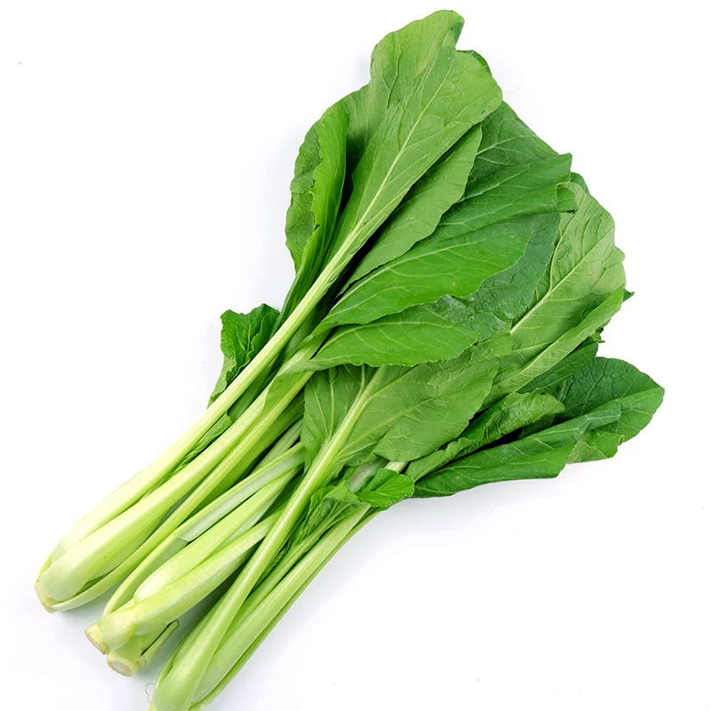

SAWI
Manfaat
Tanaman Sawi (Brassica juncea L.) kaya akan B9, karotenoid, serta mengandung sulfur tingkat tinggi yang dapat mengurangi resiko penyakit hati ovaskular dan beberapa jenis kanker. Sawi juga mengandung folat dan jenis vitamin B yang penting untuk pertumbuhan sel darah merah dan pertumbuhan sel yang sehat asam folat juga berperan penting dalam pencegahan cacar air dan keguguran.
Tempat Tumbuh
Tanaman Sawi (Brassica juncea L.) Biasanya dibudidayakan di daerah ketinggian 100-500 dpl dapat bertahan pada suhu 27-32 oC.
TEKNIK BUDIDAYA
1. Pembibitan
Benih tanaman sawi sudah bisa ditabur secara merata di atas media tanam yang sudah disiapkan. Bibit tersebut bisa dipindahkan setelah berumur dua minggu atau tumbuh daun sekitar 4 helai. Dimana bibit sawi yang digunakan harus dalam kondisi baik yaitu mulai dari akar hingga daun mudanya terlihat sehat, lengkap dan daunnya hijau.
2. Persiapan Lahan
Pertama siapkan polybag yang ukuran diameternya sekitar 30 cm x 30 cm kemudian disiapkan yaitu media tanam berupa tanah dan pupuk kandang dengan perbandingan 1:1 dan dimasukkan ke dalam polybag. Setelah dicampurkan, benih tanaman sawi sudah bisa ditabur secara merata di atas media tanam yang sudah disiapkan. Bibit tersebut bisa dipindahkan setelah berumur dua minggu atau tumbuh daun sekitar 4 helai. Dimana bibit sawi yang digunakan harus dalam kondisi baik yaitu mulai dari akar hingga daun mudanya terlihat sehat, lengkap dan daunnya hijau.
3. Penanaman
Pertama siapkan polybag yang ukuran diameternya sekitar 15 cm x 30 cm. Masukan tanah yang telah dicampur dengan kompor dengan perbandingan 1:1. Lakukan pencabutan atau pemindahan benih sawi secara hati-hati dan usahakan agar akar benih sawi tidak rusak. Buat lubang pada polybag yang telah di berisi tanah dan kompos dengan menggunakan jari dan benih sawi dapat diletakkan ke dalam lubang tersebut. Pada satu polybag dapat menampung 1 – 3 benih. Buat lubang sesuai dengan jumlah benih. Jika semua sudah selesai maka lakukan penyiraman secara rutin pada pagi dan sore hari.
4. Pemeliharaan
Pengendalian hama : Tanaman sawi pada umumnya terkena hama ulat daun yang merusak daun sawi. Adapun gejala yang ditimbulkan akibat ulat tersebut yaitu permukaan daun sawi menjadi rusak dan berlubang serta tidak rata kemudian daun dan akarnya menjadi kering. Untuk masalah ini dapat di atasi dengan cara non kimiawi yaitu dengan mengumpulkan ulat yang terdapat pada daun sawi dan membakarnya. Kemudian lakukan sanitasi.
Penyiraman : Pemeliharaan sawi dapat dilakukan dengan cara penyiraman yang di sesuaikan dengan musim. Apabila musim penghujan maka sawi sudah tidak memerlukan air lagi namun untuk musim kemarau maka sawi memerlukan banyak air yang dapat dilakukan pada pagi dan juga sore hari.
Pengajaran : Pemeliharaan dengan pengajaran ini dapat dilakukan sebanyak dua minggu setelah proses penanaman selesai. Tujuan dari cara ini yaitu menghindari terjadinya hambatan pada pertumbuhan tanaman sawi dengan cara mencabut tanaman yang tumbuh dengan rapat. Hal ini perlu diperhatikan karena tanaman tidak akan tumbuh dengan baik dan sehat apabila lokasi tanamnya sangat sempit dan berhimpit dengan tanaman lain sehingga unsur hara yang didapat dari tanah akan lebih sedikit
Penyulaman : Cara ini adalah proses pergantian tanaman yang baru. Jadi apabila tanaman sawi yang telah ditanam ternyata terkena hama serta penyakit dan kemudian sudah terlanjur mati maka dapat diganti dengan tanaman yang baru. Usahakan penyulaman ini tidak terjadi dengan cara rutin merawat tanaman sawi agar terhindar dari penyakit atau ketika tanaman terserang penyakit segera diatasi dengan cara yang telah diberikan di atas.
Penyiangan : Jadi cara ini dapat dilakukan sebanyak 2 – 4 kali selama masa tanam sawi. Penyiangan ini juga disesuaikan dengan jumlah gulma yang menyerang tanaman. Dengan pemeliharaan ini tentunya tanaman sayuran sawi akan terbebas dari yang namanya gulma, hama, dan penyakit. Hal ini juga dapat mencegah terjadinya tanaman layu dan mati sehingga tidak terjadi kesia-siaan pada saat melakukan budidaya sayuran sawi.
5. Panen
Tanaman sayur sawi ini dapat dipanen ketika usianya sudah menginjak 2 bulan. Cara panen yang dapat dilakukan yaitu dengan mencabut seluruh bagian tanaman dan dapat juga dengan memotong batang sawi bagian atasnya saja dan dapat juga dengan hanya memetik daunnya saja. Dengan memanen menggunakan cara hanya memetik daunnya saja dapat membuat tanaman sawi tumbuh lama sehingga tidak perlu lagi mengulang proses penanaman kembali. Pada saat pasca panen hal yang perlu diperhatikan adalah metode pencucian dan juga pembuangan kotoran. Kemudian metode sortasi, pengemasan, penyimpanan, serta pengolahan.